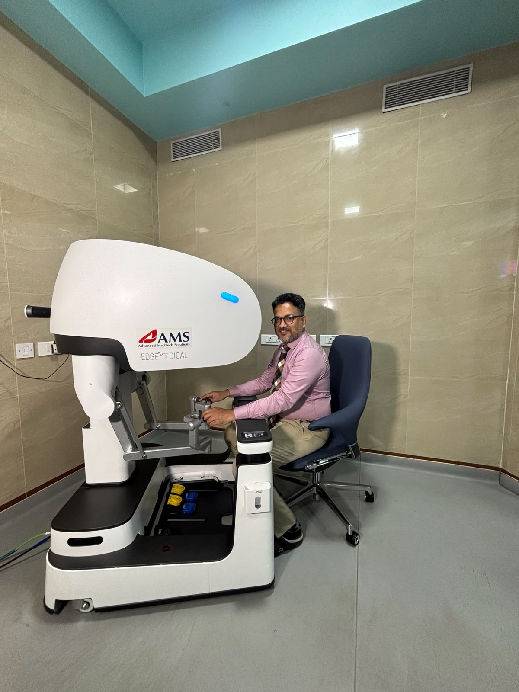

About
Meet Dr. Rohan Shetty

Dr. Rohan Shetty is an established surgical oncologist in Mangalore with more than 18 years of experience, focusing on complex cancer surgeries involving all major organ systems. A trained robotic surgeon since 2016, he regularly performs robotic and minimal access surgeries.
As an Associate Professor in the Department of Surgical Oncology at Yenepoya Medical College Hospital, he is a recognized guide for MCh postgraduates and PhD candidates, and a regular speaker at national conferences on surgical oncology, robotic surgery, and innovation in healthcare.
Beyond the operating theatre, he is a passionate researcher and the co-founder of the startup Emys Bionics Pvt Ltd, which develops patient-specific implants, surgical devices, and rehabilitation solutions for cancer patients. He is an ardent believer in cost-effective, patient-friendly treatment and has volunteered in numerous cancer awareness and screening camps.